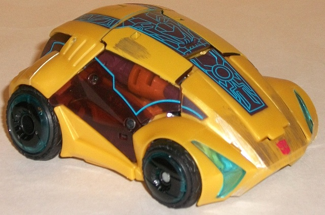
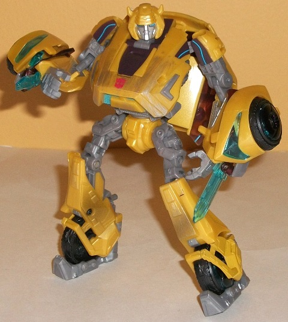
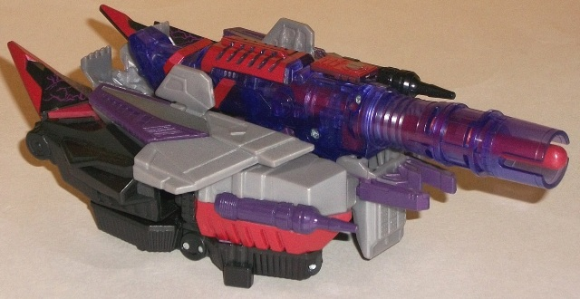
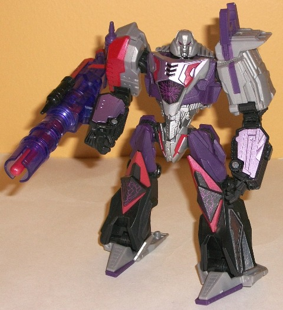
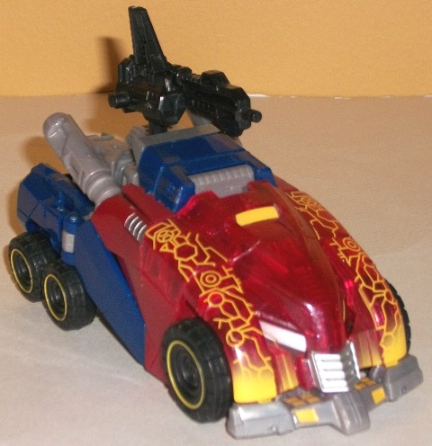
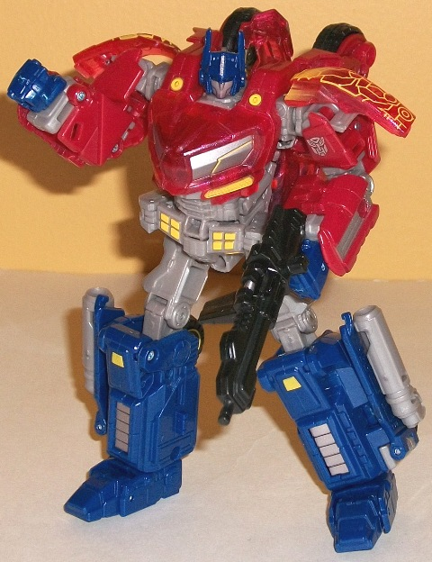

Rage
Over Cybertron (Toys "R" Us Exclusive)
Rage
Over Cybertron (Toys "R" Us Exclusive)
Set Price
: $40 U.S.
Overall Rating
: 8.0
(NOTE: Because this set is composed of repaints,
this is not a full-blown review. This mainly covers any changes made to
the set and the color scheme, and merely compares it to the original versions
of these molds. For a review on the original Cybertronian Bumblebee release,
go
here
. For a review on the original
Cybertronian Megatron release, go
here
.
For a review on the original Cybertronian Optimus Prime release, go
here
.)
Bumblebee
(Cybertronian)


Allegiance
: Autobot
Size
: Deluxe
Difficulty of Transformation
: Hard
Color Scheme
: Moderately dull yellow,
moderately light milky gray, transparent brownish-orange, and some transparent
light blue, black, dark dull brown, silver, and light sky blue
Individual Rating
: 8.3
For this "Rage" version,
Bumblebee's base color scheme of yellow-and-black has stayed the same,
but some of the accent colors-- as well as some of the paint apps-- have
changed. The biggest and most obvious change is that the light red detailing
has been changed to a light sky blue, and likewise some of his transparent
red plastic has been changed to a transparent light blue. Overall I don't
think I like or dislike this change any more than the light red-- it contrasts
with the yellow and black just as well, it's just a different feel, is
all. I do LOVE the TRON-like paint detailing all down the center of Bumblebee's
vehicle mode, though-- it's actually highly reminscient of the detailing
for an energy "overshield" in the
War for Cybertron
video game. Other changes I'm less fond of-- the gray on some of Bumblebee's
robot parts has been changed to a lighter gray, giving it less contrast
and generally making that mode look more boring. The yellow paint detailing
has also been left off part of his "side windows" in car mode, making it
a bit obvious that those pieces are... well, unpainted when they're not
supposed to be, as the windows now look a bit oddly-shaped (that said,
it's not as off-putting as it may at first seem, since Bumblebee's vehicle
mode is so alien in this form anyways). There's also been some silver "worn
metal" brushstroke paint apps added to parts of the vehicle mode, though
it blends in enough with the dull yellow plastic that only if you have
the light source shining on it at the right direction does the silver really
pop off its surrounding color. There's also a couple of "scorch marks"
on his robot legs. All these apps are rather oddly selective in where they're
placed though, so they don't create the effect of a "worn-down bot" as
much as they otherwise would have if fully implemented. Another change
is that the clear plastic tint is a slightly more orangish hue, but that's
so minor it's barely worth mentioning-- it barely affects the look of the
toy at all compared to the black-tinted plastic that it replaced.
No mold changes have
been made to "Rage" Bumblebee.
Bumblebee (Cybertronian) Tech Specs
:
Strength: 6.0
Intelligence: 8.0
Speed: 6.0
Endurance: 5.0
Rank: 5.0
Courage: 10.0
Fireblast: 3.0
Skill: 9.0
Megatron
(Cybertronian)


Allegiance
: Decepticon
Size
: Deluxe
Difficulty of Transformation
: Easy
Color Scheme
: Moderately light milky
gray, black, dark purple, transparent purple, moderately dark red, and
some light metallic violet, silver and royal purple
Individual Rating
: 7.7
"Rage" Megatron is easily
the most visually changed of the trio included in this multi-pack, though
he still has the "Megatron-y" basic colors of gray and black. However,
his gray is of a bit darker, less pastel hue, though it's still of the
rather boring shade. However, what really livens up Megatron this time
around is the addition of (among other things) dark purple plastic into
his color scheme, making it far less monochromatic. Adding it to the chest,
upper legs, and as paint apps on part of the upper arms really gives him
that whole "Dark Energon" feel very well. But that's not even the best
part-- his entire gun is now transparent purple, which looks REALLY nice
with the red and black paint apps on it, and parts of his chest and lower
arms have been painted a nice metallic violet as a sort of "in-between"
color between the purple and the gray. Best of all, he has some REALLY
nice-looking Dark Energon "electric bolt" paint apps around the Decepticon
symbol on his stomach and on his knees. These REALLY help to create the
illusion that he's practically crackling with evil energy, and all the
existing red paint apps help this illusion even more. The silver on the
torso and face is also a really nice shade of the color, looking very much
like a metallic shade of his gray plastic, and pops quite well against
his other colors.
No mold changes have
been made to "Rage" Megatron.
Megatron (Cybertronian) Tech Specs
:
Strength: 10.0
Intelligence: 10.0
Speed: 10.0
Endurance: 10.0
Rank: 10.0
Courage: 9.0
Fireblast: 10.0
Skill: 9.0
Optimus
Prime (Cybertronian)


Allegiance
: Autobot
Size
: Deluxe
Difficulty of Transformation
: Hard
Color Scheme
: Dark glittery blue,
glittery dull red, moderately dark milky gray, and some black, silver,
yellow, transparent glittery red, and transparent light blue
Rating
: 8.0
Out of the three redecoes
in this set, "Rage" Optimus Prime is easily the least-changed. For the
most part, he's the same-- the plastic colors are almost universally the
same, and the paint apps are largely in the same spots. The main difference
is the piece that forms most of the front part of the vehicle mode-- instead
of a solid red, it's now a rather nice glittery transparent shade of that
color (though it's not
so
transparent that you can easily see all
the robot parts behind it). This is probably to simulate Energon like on
the other redecos, as on that same piece of plastic are similiar intricate
patterns-- meant to signify Energon-- that are on "Rage" Bumblebee. The
yellow they're in contrasts very well with the red (particularly the transparent
bit of it), and the yellow "fade" those apps have as they come down to
the bumper is another nice touch. The other changes made are minor to the
point of being barely noticeable. There's some slight silver paint wash
on the blue piece on the top of his vehicle mode to simulate "worn metal",
which looks nice but isn't a huge deal. Also, all of the pinkish red paint
details on the original version of this mold have been changed to yellow
on this release to match the "Energon veins" (with the exception of the
taillights in vehicle mode, which are no longer painted, likely due to
the increased number of paint apps on the front side). Again, another positive
change as it contrasts better, but not a huge one.
No mold changes have
been made to "Rage" Optimus Prime.
Optimus Prime (Cybertronian) Tech Specs
:
Strength: 10.0
Intelligence: 10.0
Speed: 7.0
Endurance: 10.0
Rank: 10.0
Courage: 10.0
Fireblast: 10.0
Skill: 9.0
Recommending the "Rage
of Cybertron" set is a bit of a conundrum. Although
overall
I think
the paint jobs on these re-releases are better than their single releases,
they're also slightly more expensive in this multipack, and I think by
himself this version of Bumblebee is a little less impressive visually.
All three also share the same basic color schemes as their initial releases.
If you have either the single-release versions of Bumblebee or Optimus,
this is probably a set you can skip unless you're such a huge War for Cybertron
fan you
need
to have every toy released from that game. If you don't
have any of the previous iterations of these molds-- or just the previous
iteration of this Megatron, since this version looks
so much better
--
this set gets a mild-to-strong recommendation, depending on how much you
like Cybertronian alt modes.
Rage Over Cybertron Bio
:
Cybertron is a floating hunk of scrap.
Centuries of war have devastated the world and sent millions of Autobot
and Decepticon soldiers to the junkyard. The evil Megatron and his Decepticons
use the shell of a planet to plot their assaults against the Autobots.
Their latest weapon? Dark Energon! Megatron surges with its unbridled,
vicious power, ready to conquer the universe. But Optimus Prime and his
Autobots will not go down without a fight-- they're fueled by the same
righteous and pure Energon that powered the golden age of Cybertron!
Reviews by Beastbot
Back to Transformers:
Generations Index